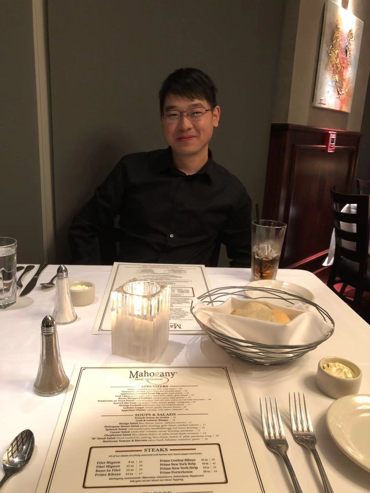

Work Experience
Ivy Energy Inc
Senior Software Engineer 2020 - Present
-
University of Tulsa
Adjunct Research 2017 - 2020
Halliburton Energy Service
Technology Intern 2019 - 2019
PetroChina Inc
Data Scientist 2015 - 2017
Educations
Georgia Institute of Technology
M.S. in Computer Science
University of Tulsa
Ph.D. in Petroleum Engineering